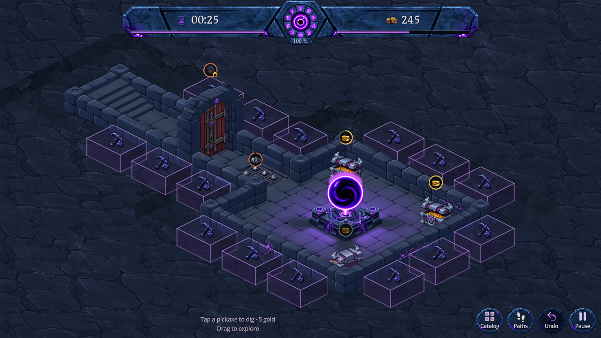
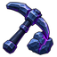
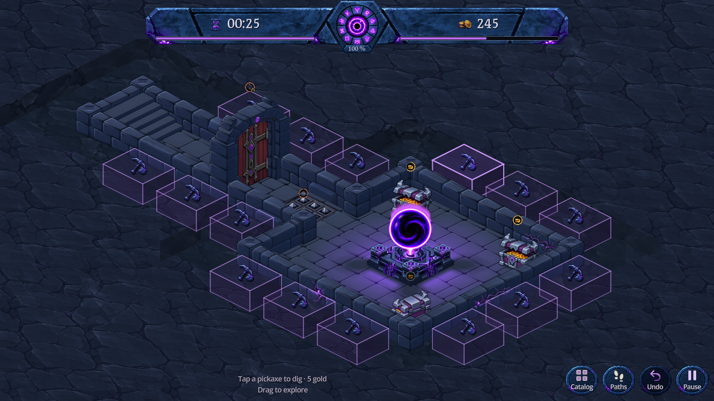
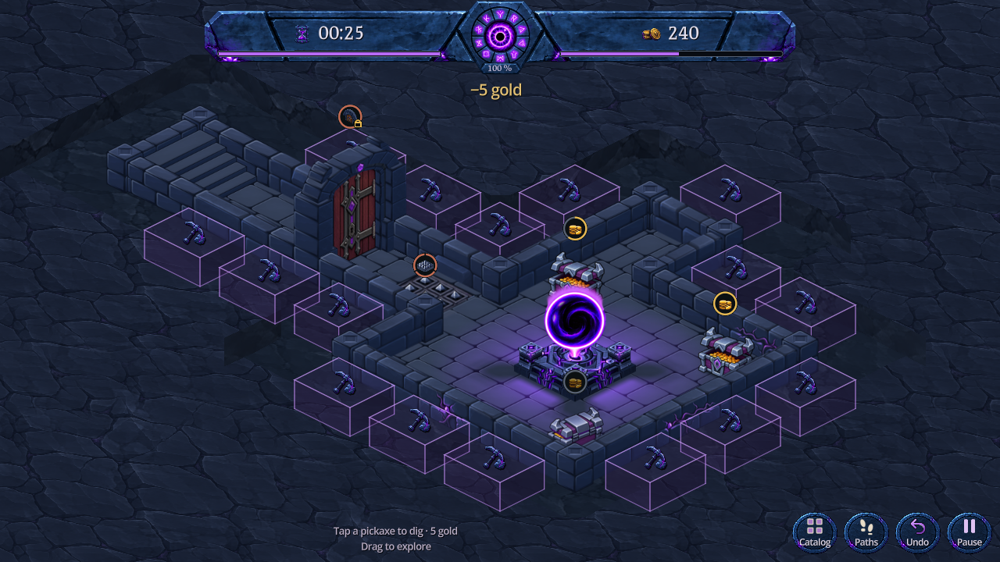

Une pioche de fer sombre fend une pierre bleu ardoise, traversée de corruption violette. Sa silhouette indique le creusement tout en reprenant les matières des icônes de l’en-tête. Le cube et ses côtés restent cliquables ; l’espace de 0,90 case autour du donjon est conservé.

Capture Godot · 1280 × 720 · Nouvelle pioche



Aperçu isolé dans DigBlocksPreview.tscn, sans sauvegarde joueur. Le jeu principal garde son affichage actuel. Le marquage disparaît quand le creusement est indisponible ; le terrain reste présent.
Le marquage suit le volume du sol jusqu’à la hauteur native des murs. Deux faces latérales teintées et les arêtes visibles rendent la profondeur lisible. La roche continue est réutilisée ; seule l’icône de creusement change, avec un PNG de 64 × 64 partagé par tous les cubes. Le terrain reste présent lorsque les actions sont masquées. Le dégagement original de 0,90 case autour du donjon est conservé, avec les mêmes teintes de fond et de parois. Les cubes sont des repères transparents et ne remplissent pas cet espace.
247 vérifications natives réussies : présence du terrain, hauteur, appui, déplacement, coût, manque d'or, retrait et restauration de la roche. Le test exerce un appui tactile réel sur une face latérale, le coût unique de 5 pièces et l’annulation. Bureau, paysage et portrait inspectés ; pas de validation sur téléphone physique.
Nouvelle icône créée avec ImageGen intégré : original transparent, consigne, préparation et empreinte. Recadrage et réduction uniforme à 64 × 64 : 7 072 octets PNG, 16 Kio RGBA. Reproduction : node tools/prepare_dig_icon.cjs, import Godot, puis godot --path . --script res://tools/capture_dig_blocks.gd.